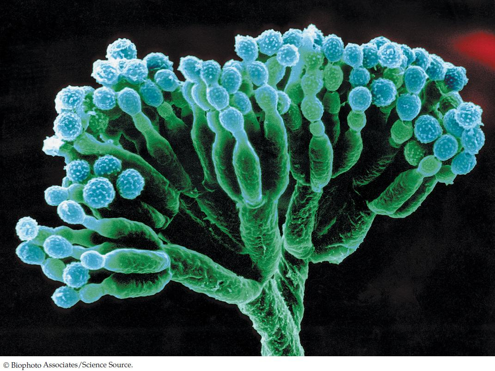

| 22 | The Evolution and Diversity of Fungi |
|

All species of the fungus Penicillium are recognizable by their dense spore-bearing structures (see Figure 22.18).
|
Alexander Fleming was already a famous scientist in 1928, but his laboratory was often a mess. That year he was studying the properties of Staphylococcus bacteria, the agents of dangerous staph infections. In August he took a long vacation with his family. When he returned in early September, he found that some of his petri dishes of Staphylococcus had become infested with a fungus that killed many of the bacteria.
Many scientists would have sighed at the loss, thrown out the petri dishes, and started new cultures of bacteria. But when Fleming looked at the dishes, he saw something exciting. Around each colony of fungi was a ring within which all the bacteria were dead.
Fleming hypothesized that the bacteria-free rings around the fungal colonies were produced by a substance excreted from the fungi, which he initially called “mould juice.” He identified the fungi as members of the genus Penicillium and eventually named the antibacterial substance produced by these fungi penicillin. Fleming published his discovery in 1929, but initially the finding received very little attention.
Over the next decade, Fleming produced small quantities of penicillin for testing as an antibacterial agent. Some of the tests showed promise, but many were inconclusive, and eventually Fleming gave up on the research. But his tests had shown enough promise to attract the attention of several chemists, who worked out the practical problems of producing a stable form of the substance. Clinical trials of this stable form of penicillin were extremely successful, and by 1945 it was being produced and distributed as an antibiotic on a large scale. That same year, Fleming and two of the chemists, Howard Florey and Ernst Chain, won the Nobel Prize in Medicine for their work on penicillin.
The development of penicillin was one of the most important achievements in modern medicine. Until the introduction of modern antibiotics, the most widespread agents of human death included bacterial infections such as gangrene, tuberculosis, and syphilis. Penicillin proved to be highly effective in curing such infections, and its success led to the creation of the modern pharmaceutical industry. Soon many additional antibiotic compounds were isolated from other fungi or synthesized in the laboratory, leading to a “golden age” of human health.
Have antibiotics derived from fungi eliminated the danger of bacterial diseases in human populations?